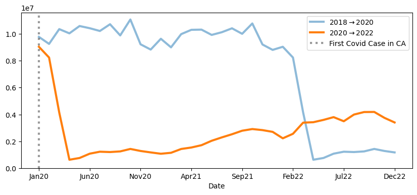
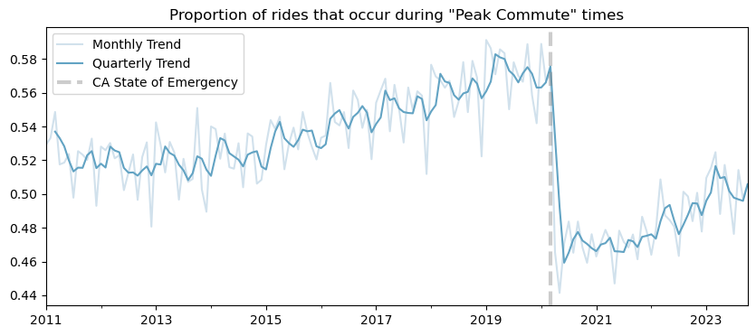

import pandas as pd
import numpy as np
import dask.dataframe as dd
from dask.diagnostics import ProgressBar
import seaborn as sns
import matplotlib.pyplot as plt
from datetime import datetimeThe following example involves a situation where I want to read in historical data on Bay Area Rapid Transit (BART) ridership at the station/hour level. BART kindly makes such ridership information publicly available on their webpage.
The following is an example data retrieval workflow that relies on dask, a library for parallelizing Python code.
df = dd.read_parquet("../dask-data-io/data/parquet_data")df.head()| Date | Hour | Start | End | Riders | |
|---|---|---|---|---|---|
| 0 | 2018-01-01 | 0 | 12TH | 16TH | 1 |
| 1 | 2018-01-01 | 0 | 12TH | BAYF | 1 |
| 2 | 2018-01-01 | 0 | 12TH | CAST | 3 |
| 3 | 2018-01-01 | 0 | 12TH | CIVC | 2 |
| 4 | 2018-01-01 | 0 | 12TH | CONC | 2 |
Subsets for In-Memory Analysis
df_stations = df.groupby(['Date', 'Start', 'End'])['Riders'].sum().compute()df_stations = df_stations.reset_index()
df_stations.head()| Date | Start | End | Riders | |
|---|---|---|---|---|
| 0 | 2021-01-01 | 12TH | ASHB | 4 |
| 1 | 2021-01-01 | 12TH | BERY | 2 |
| 2 | 2021-01-01 | 12TH | CIVC | 24 |
| 3 | 2021-01-01 | 12TH | COLS | 14 |
| 4 | 2021-01-01 | 12TH | CONC | 5 |
df_stations.shape(5295528, 4)Condensing via grouping
df_rph = df.groupby(['Date', 'Hour'])['Riders'].sum().compute()df_rph = df_rph.reset_index()
df_rph.head()| Date | Hour | Riders | |
|---|---|---|---|
| 0 | 2018-01-01 | 0 | 2965 |
| 1 | 2018-01-01 | 1 | 13613 |
| 2 | 2018-01-01 | 2 | 7802 |
| 3 | 2018-01-01 | 3 | 3039 |
| 4 | 2018-01-01 | 4 | 272 |
df_rph.shape(52262, 3)df_rph['Date'] = pd.to_datetime(df_rph['Date'], format="%Y-%m-%d")
df_rph['day_of_week'] = df_rph['Date'].dt.day_name()
df_rph['Weekend'] = df_rph['day_of_week'].isin(['Saturday', 'Sunday'])df_rph.head()| Date | Hour | Riders | day_of_week | Weekend | |
|---|---|---|---|---|---|
| 0 | 2018-01-01 | 0 | 2965 | Monday | False |
| 1 | 2018-01-01 | 1 | 13613 | Monday | False |
| 2 | 2018-01-01 | 2 | 7802 | Monday | False |
| 3 | 2018-01-01 | 3 | 3039 | Monday | False |
| 4 | 2018-01-01 | 4 | 272 | Monday | False |
df_rph_d = df_rph.set_index("Date")
df_rph_d| Hour | Riders | day_of_week | Weekend | |
|---|---|---|---|---|
| Date | ||||
| 2018-01-01 | 0 | 2965 | Monday | False |
| 2018-01-01 | 1 | 13613 | Monday | False |
| 2018-01-01 | 2 | 7802 | Monday | False |
| 2018-01-01 | 3 | 3039 | Monday | False |
| 2018-01-01 | 4 | 272 | Monday | False |
| ... | ... | ... | ... | ... |
| 2024-05-05 | 19 | 4160 | Sunday | True |
| 2024-05-05 | 20 | 3283 | Sunday | True |
| 2024-05-05 | 21 | 2722 | Sunday | True |
| 2024-05-05 | 22 | 2139 | Sunday | True |
| 2024-05-05 | 23 | 1318 | Sunday | True |
52262 rows × 4 columns
every_two = df_rph_d.index.year.unique()[::2][:-1]
every_twoIndex([2018, 2020, 2022], dtype='int32', name='Date')df_rph_d = df_rph.set_index("Date")
fig, ax = plt.subplots(figsize=(10, 4))
every_two = df_rph_d.index.year.unique()[::2][:-1]
labs = (
df_rph_d.loc[str(every_two[-2]):str(every_two[-1])].resample("M")['Riders'].sum().index.month_name().str[:3] +
df_rph_d.loc[str(every_two[-2]):str(every_two[-1])].resample("M")['Riders'].sum().index.year.astype(str).str[-2:]
)
for i in range(len(every_two)-1):
a = 1 if (every_two[i+1] == every_two[-1]) else .5
subset = df_rph_d.loc[str(every_two[i]):str(every_two[i+1])]
subset_time_series = subset.resample("M")['Riders'].sum().reset_index().set_index(labs)['Riders']
subset_time_series.plot(linewidth=3,
ax=ax,
alpha=a,
label=fr"${every_two[i]} \rightarrow {every_two[i+1]}$")
ax.set_ylim(0)
ax.axvline(np.where(subset_time_series.index == 'Jan20'),
linestyle=":",
label="First Covid Case in CA",
color="black",
linewidth=3,
alpha=.4)
ax.legend();C:\Users\peteramerkhanian\AppData\Local\Temp\ipykernel_24348\1943087702.py:6: FutureWarning: 'M' is deprecated and will be removed in a future version, please use 'ME' instead.
df_rph_d.loc[str(every_two[-2]):str(every_two[-1])].resample("M")['Riders'].sum().index.month_name().str[:3] +
C:\Users\peteramerkhanian\AppData\Local\Temp\ipykernel_24348\1943087702.py:7: FutureWarning: 'M' is deprecated and will be removed in a future version, please use 'ME' instead.
df_rph_d.loc[str(every_two[-2]):str(every_two[-1])].resample("M")['Riders'].sum().index.year.astype(str).str[-2:]
C:\Users\peteramerkhanian\AppData\Local\Temp\ipykernel_24348\1943087702.py:13: FutureWarning: 'M' is deprecated and will be removed in a future version, please use 'ME' instead.
subset_time_series = subset.resample("M")['Riders'].sum().reset_index().set_index(labs)['Riders']
C:\Users\peteramerkhanian\AppData\Local\Temp\ipykernel_24348\1943087702.py:13: FutureWarning: 'M' is deprecated and will be removed in a future version, please use 'ME' instead.
subset_time_series = subset.resample("M")['Riders'].sum().reset_index().set_index(labs)['Riders']
df_rph['Hour_12'] = pd.to_datetime(df_rph['Hour'], format='%H').dt.strftime('%I:%M %p')
df_rph['Hour_12'] = df_rph['Hour_12'].str.replace(":00 ", "\n").str.strip("0")days = df_rph['day_of_week'].unique()
colors = sns.color_palette("tab10")
colormap = {}
for d, c in zip(days, colors[:len(days)]):
colormap[d] = ccolormap{'Saturday': (0.12156862745098039, 0.4666666666666667, 0.7058823529411765),
'Sunday': (1.0, 0.4980392156862745, 0.054901960784313725),
'Monday': (0.17254901960784313, 0.6274509803921569, 0.17254901960784313),
'Tuesday': (0.8392156862745098, 0.15294117647058825, 0.1568627450980392),
'Wednesday': (0.5803921568627451, 0.403921568627451, 0.7411764705882353),
'Thursday': (0.5490196078431373, 0.33725490196078434, 0.29411764705882354),
'Friday': (0.8901960784313725, 0.4666666666666667, 0.7607843137254902)}fig, ax = plt.subplots(figsize=(10, 4))
sns.despine(top=True, ax=ax)
sns.set_palette("PuBuGn_d")
g = sns.lineplot(
data=df_rph.assign(riders_k = lambda x: x['Riders']/1000),
x='Hour_12',
y='riders_k',
hue='day_of_week',
palette=colormap,
linewidth=3,
estimator='mean',
errorbar=None,
ax=ax)
ax.set(
ylabel="Average Riders (1,000s)",
xlabel="Hour")
legend = ax.get_legend()
legend.set_title("Day of the week")
for line in legend.get_lines():
line.set_linewidth(4.0)
ax.grid(alpha=.6)
fig.tight_layout()
years = df_rph['Date'].dt.year.unique()[1:]
years = years.reshape(4, 3)
fig, axes = plt.subplots(4, 3, sharex=True, sharey=True, figsize=(7, 7))
for m in range(years.shape[0]):
for n in range(years.shape[1]):
year = years[m, n]
subset = df_rph[df_rph['Date'].dt.year == year]
sns.lineplot(
data=subset.assign(riders_k = lambda x: x['Riders']/1000),
x='Hour',
y='riders_k',
hue='day_of_week',
palette=colormap,
linewidth=1,
legend=False,
estimator='mean',
errorbar=None,
ax=axes[m, n])
axes[m, n].set(ylabel=None, xlabel=None, title=year)
fig.supxlabel("Hour")
fig.supylabel("Average Riders (1,000s)")
fig.tight_layout()
weekday_load = (df_rph
.groupby([
df_rph['Date'].dt.year,
df_rph['Date'].dt.month,
(df_rph['Hour'].isin([7, 8, 9, 16, 17, 18, 19])) &
~df_rph['Weekend']]
)
['Riders']
.sum()
.unstack()
.dropna(axis=0)
.apply(lambda x: x[True]/(x[True]+x[False]), axis=1)
.rename_axis(index=['Year', 'Month']))weekday_load_vec = (
weekday_load
.reset_index()
.set_index(
pd.to_datetime(weekday_load.reset_index()['Year'].astype(str) +
"-" +
weekday_load.reset_index()['Month'].astype(str)
)) # Build a new Year-Month index
[0].rename("Percent") # The series was, by default, named `0`. Here we rename to Percent
.iloc[:-1] # Remove the most recent month, as it is typically unfinished
)fig, ax = plt.subplots(figsize=(10, 4))
weekday_load_vec.plot(alpha=.4, ax=ax, label="Monthly Trend")
weekday_load_vec.rolling(3).mean().plot(ax=ax, label="Quarterly Trend")
ax.axvline("2020-03-04", linestyle="--", label="CA State of Emergency", color="grey", linewidth=3, alpha=.4)
ax.set_title("Proportion of rides that occur during \"Peak Commute\" times")
ax.legend();